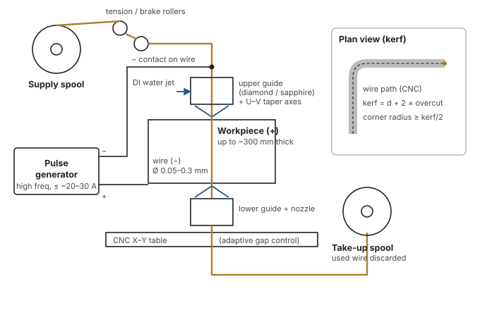
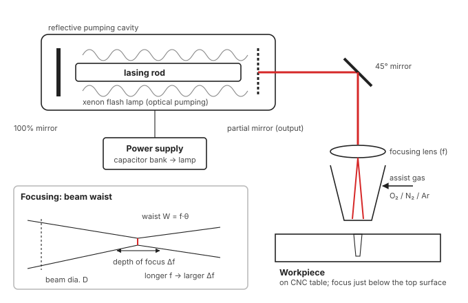

Reference · Unit 3
Process sheets: one card per process
The 7-part answer skeleton, filled in for each process. Use these the night before, after you have done the lessons.
EDM: electric discharge machining
Principle. Controlled, repetitive sparks across a dielectric-filled gap between tool (−) and work (+) melt and vaporise craters; the tool shape is reproduced.

Working
- Field at narrowest gap → ionisation → plasma channel ~10,000 °C
- Melting under ~200 atm channel pressure → pulse-off collapse ejects melt
- Dielectric quenches and flushes; servo holds gap; craters overlap
Elements
- Pulsed DC generator (RC or transistor) · dielectric system (pump, filter) · electrode (graphite, Cu, Cu–W, brass) · servo · flushing
Parameters
- Current ↑ / voltage ↑ / on-time ↑ / C ↑ → MRR ↑, Ra ↑, damage ↑
- Frequency ↑ → finer finish · gap ↓ → better accuracy, lower MRR
- DI water: MRR ↑, tool wear ↑ · good flushing: MRR up to ~10×
Key numbers
- IEG 12–50 µm · 80–100 V · MRR 0.1–10 mm³/min·A · ±0.025 mm · Ra 0.8–3.1 µm · recast 2.5–50 µm · L/D up to 100:1
Derivations
Applications
- Hardened dies and moulds · fine deep holes (injectors, cooling holes) · broken taps · splines, D-holes · fragile parts
Advantages
- Any conductive hardness
- No force; complex shapes
- Burr-free; after hardening
Limitations
- Conductive only; low MRR
- Tool wear, overcut
- Recast, HAZ, fatigue ↓15%
Wire EDM
Principle. A continuously fed wire (Ø0.05–0.3 mm) is the electrode; sparks in deionised water cut a CNC-programmed through-contour.

Four systems
- Power supply (~1 MHz, ≤ ~20–30 A) · DI water dielectric (coaxial jets, 5 µm filter) · CNC X–Y + U–V positioning (adaptive) · wire drive (tension, diamond/sapphire guides)
Specials
- Stratified wire: Zn coat vaporises first → core cooler → more energy, faster cutting
- Wire bowing from gas bubbles → higher tension
- Cutting rate depends on thickness, not complexity
Key numbers
- Accuracy ~±7 µm · Ra ~0.1 µm finish pass · 18,000 mm²/h (50 mm steel) · kerf = d + 2·overcut
Applications
- Punch/die sets · carbide, PCD, CBN tools · extrusion dies · gears · medical parts · EDM electrodes
Advantages
- No tool to make
- Any 2D contour; tapers
- Die cost −30–70%
Limitations
- Through-cuts only
- Slow; costly; wire breaks
- Conductive only
LBM: laser beam machining
Principle. A monochromatic, coherent, low-divergence beam is focused to a tiny spot (10⁶–10⁸ W/cm²); absorbed energy melts and vaporises material, which vapour pressure and assist gas expel.

Laser production
- Absorption → spontaneous → stimulated emission · pumping → population inversion · resonator mirrors (100% + partial)
Types
- Ruby 0.69 µm (pulsed, ~1%) · Nd:YAG 1.06 µm (pulsed/CW, fine focus) · CO₂ 10.6 µm (high CW power, ~10–15%)
Parameters
- Power/pulse energy, pulse duration (0.1–2.5 ms deep holes), rep rate, wavelength vs absorptivity, focal length and focus position (W = fθ), assist gas, speed
Key numbers
- Holes 0.125–1.25 mm, L/D to 100:1 · HAZ 0.0025–0.1 mm · repeatability ±0.025 mm or ±10% · efficiency <1% · >1.2 mm holes trepanned
Applications
- Turbine cooling holes · diamond dies, jewel bearings · sheet cutting · marking · scribing wafers · resistor trimming
Advantages
- Any material; no contact
- Through transparent media
- Tiny holes; easy CNC
Limitations
- Reflective Al, Cu difficult
- Very low efficiency; cost
- Taper, recast, thin sections
EBM: electron beam machining
Principle. Electrons from a hot cathode, accelerated (50–150 kV) and magnetically focused in vacuum, strike the work in pulses; KE → heat vaporises material; backing material blows out the melt.

System
- Gun (W/Ta filament ~2000 °C, grid cup pulses beam, anode) · HV supply · aperture, magnetic lens, deflection coils · vacuum 10⁻⁴–10⁻⁵ torr · viewing optics · CNC table
Parameters
- Beam current 100 µA–1 A (energy/pulse) · pulse 50 µs–10 ms (hole size, HAZ) · lens current (focus, spot) · focal position (hole shape) · deflection (shapes)
Derivation
- MRR = ηP/W; W = ρ[csΔTs + Lf + clΔTl + Lv]; η < 20% (L9)
Key numbers
- Holes 0.1–1.4 mm, depth ~10 mm, L/D ~15:1 · recast ≤ 0.025 mm
Applications
- Mass perforation (combustor domes, filters) · spinnerets · injector metering holes · cooling holes · wire-drawing dies · EB lithography
Advantages
- Any material
- Very fine, very fast holes
- Electronic steering
Limitations
- Vacuum time; chamber size
- X-rays; very costly
- Thin work; taper, recast
PAM: plasma arc machining
Principle. A DC arc ionises gas flowing through a constricting nozzle; the plasma jet (11,000–30,000 °C, hundreds of m/s) melts the work and blows the melt out.

Modes
- Transferred: arc to work (+), conductive only, 85–90% efficient, cutting · Non-transferred: arc to nozzle, any work, 65–75%, spraying
Torches
- Air (Zr/Hf electrode) · oxygen-injected (+25% speed on steel) · dual gas (sharp top edge) · water-injected (square cut, small HAZ)
Parameters
- Current/power (with matching gas flow) · gas type and flow · SOD 6–30 mm · speed S = 25.4/t at 500 A
Key numbers
- Up to 150 mm plate · ±0.8 mm (t < 25) / ±3 mm · kerf 2.5–9.5 mm · taper 5–7° · Ra 5–75 µm · HAZ 0.75–5 mm
Applications
- SS, Al, Ti, Cu plate cutting · stack cutting · pipe bevelling · plasma turning · underwater cutting · spraying and surfacing
Advantages
- Very fast; thick plate
- Metals oxy-fuel can't cut
- Easy CNC automation
Limitations
- Poor accuracy; wide kerf
- Large HAZ; dross
- Fumes, noise, UV
IBM: ion beam machining
Principle. Inert-gas ions (Ar⁺) accelerated in vacuum strike the surface and eject atoms by momentum transfer (sputtering); no melting.

Equipment
- Ion source (discharge chamber, hot cathode, magnets) · extraction/acceleration grids (0.3–2 kV; up to ~10 keV) · neutraliser · vacuum chamber · mask · tilting, rotating holder
Derivation
- ḣ = JSM/(ρF): ∝ current density × sputter yield (L11)
Parameters
- Ion energy · current density · incidence angle (oblique ↑ yield) · ion species · target and mask materials · rotation
Key numbers
- nm/min (Tut Q20: 22.3 nm/min) · NASA: SS at 210 nm/min; 0.9 mm holes took 75 h
Applications
- Ion milling of ICs and thin films · gratings, holograms · optics figuring, polishing · TEM thinning · diamond tool sharpening · cleaning
Advantages
- Any material; nm precision
- No HAZ, recast or force
- Directional, chemical-free
Limitations
- Extremely slow
- Costly vacuum system
- Mask erosion; redeposition